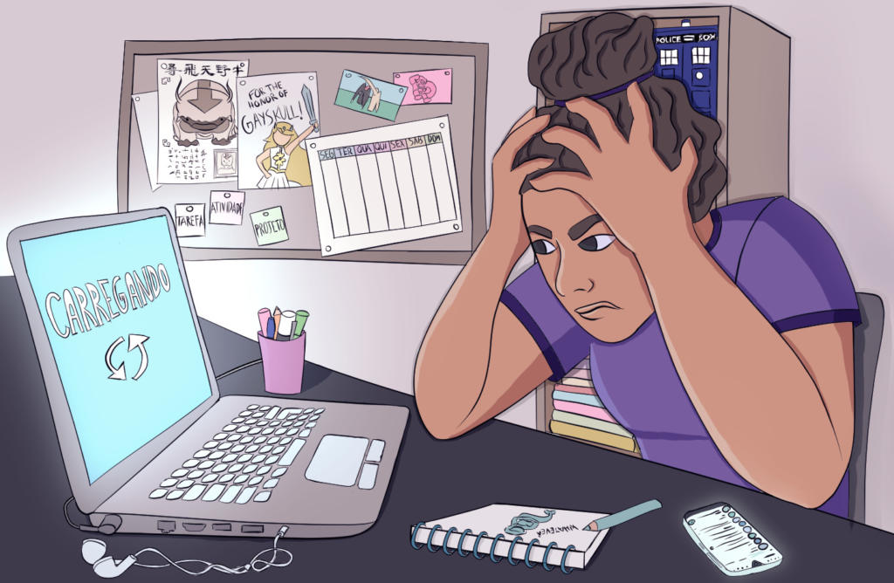

As Redes Sociais

Oii gente!! aqui é a Rebeca e hoje vamos conversar sobre as nossas queridas e destruidoras redes sociais. Eu sei que muito de vocês, assim como eu, já ficou mal por ver alguém com uma vida “perfeita”, um corpo “perfeito” e um cabelo “perfeito”, não é mesmo? Pois é, eu sei, mas não é culpa da pessoa, nem do aplicativo e nem de nós mesmo. Nesse período de isolamento social estamos muito desanimados, cansados e angustiados, nossas rotinas mudaram da noite para o dia e isso afetou todos drasticamente, você meu(minha) jovem não esta sozinho(a), não é só você que esta sentindo, somos todos nós, e como eu sei que é importante falar sobre isso, vim aqui dizer como devemos reagir com a internet para absorvermos dela apenas coisas saudáveis. Vamos lá?
- Em primeiro lugar temos que por na nossa cabeça que somos lindos, suficiente, inteligente, capacitados de fazer qualquer coisa (desde que você não tenha nenhuma limitação, mas isso não te impede de fazer de outra forma, do seu jeitinho :3), legais, divertidos, amorosos e carinhosos. Qualquer pessoa que dizer o contrário disso não precisa se importar, porque você sabe como você realmente é. Se aceitar do jeito que você é, é um passo muito importante para conseguirmos continuar esta conversa, quando começamos a nos amar em primeiro lugar, tudo fica mais “fácil”, porque conseguimos entender o que queremos, o que merecemos e absorvemos apenas o ideal para a gente.
-
Em segundo lugar, precisamos entender que nas redes sociais nem tudo é verdade. Com a tecnologia avançada que temos hoje, é possível editar qualquer tipo de foto e deixá-la como queremos.
Beca, mas por que as pessoas fazem isso? Por que editar a foto ate ficar boa?
Porque essas pessoas ainda não se amam do jeito que elas são. Isso não é um processo fácil, muitas pessoas tem traumas de infância, de relacionamentos e entre outros, que bloqueia o andamento da auto estima, e um jeito de se ajudar nisso é fazendo terapia.
Mas beca, eu não tenho condições financeiras de fazer uma terapia.
Tudo bem,agora é a hora de usar as redes sociais de um modo construtivo para nós. No you tube tem vários profissionais que postam vídeos sobre isso, dicas de relaxamento etc. Então saiba separar o real do irreal, nenhum corpo e cabelo são perfeitos ao ponto de padronizá-los, porque todo mundo é diferente e lindo do seu jeito; nenhuma família é perfeita porque todas brigam, ficam sem se falar; nenhuma pessoa é perfeita, porque como eu já havia dito, todos nós somos diferentes, ok? Lição de casa aprendida? Você tem que ser perfeito ao seus olhos, nunca vamos agradar à todos. - Terceiro e ultimo, tempo, devemos controlar o tempo em que ficamos no celular, eu sei que é legal e muitos usam como um refugiu, mas estudar, ficar com a família, amigos e tirar um tempo para você mesmo se cuidar é muito importante. Deste modo conseguimos focar em outras coisas, absorvendo outras coisas também.
Desafios da EAD
Oii galera!! Beca na área, vocês também estão sofrendo com a EAD? Pois é, eu também, está cada dia mais entediante e difícil me concentrar e realmente aprender desse modo de ensino. Enfrentamos muitos desafios no ensino online, como a falta de aparelhos eletrônicos para nos conectar, falta de internet, de tempo etc. Muitas pessoas moram com mais de 6 pessoas e utilizam apenas 1 celular, sem contar com a dificuldade de conciliar o nosso tempo para os estudos e a família. Mas não devemos desanimar, o estudo não é apenas para os nossos futuros trabalhos, mas também para nos formar como seres humanos de opinião.
Vestibular
Agora para você que está estudando no ensino superior, técnico ou para algum vestibular, organizar seu tempo é essencial para que não haja exaustão e sobrecarga, além de tudo, estudar não é o mesmo que aprender. Esteja bem descansado quando for estudar, se alimente, hidrate-se e utilize intervalos de 15 minutos entre o horário de estudo, assim conseguirá descansar sua mente. Veja video aula ou leia como apoio para algumas matérias, anote e revise durante a semana. Manter a mente sempre ativa ajuda no entendimento mais rápido do assunto.
A Família
Oii povo!! Como vocês estão? Já disseram para os seus pais que os amam hoje? Por que é sobre a nossa família que iremos falar nesse momento.
Com a chegada da quarentena, milhares de pais perderam o trabalho ou ficaram trabalhando de modo remoto em suas casas, junto com os filhos, cachorros, gatos e entre outros. E é claro que com todo esse tempo confinado, todos ficam abalados emocionalmente, lidar com a família e com as emoções não é algo fácil, o que faz com que as brigas e discussões sejam mais frequentes. Mas é importante termos nossa família do nosso lado nesse período difícil onde muitas pessoas estão perdendo parentes queridos. Então vamos sempre conversar, tentar descontar nossa raiva, nosso cansaço em outras coisas, sem ser nas pessoas.
Amigos confinados
Olá neninos e meninas! Vocês estão com saudade daquele(a) amigo(a) ou do grupinho? Eu estou morrendo de saudade, e não aguento mais esse tédio na quarentena, então vim aqui falar alguns jogos e brincadeiras para fazer com os amigos online!!
Bora lá?
- Gartic
- StopotS
- A cidade dorme
O objetivo do game é adivinhar o que está sendo desenhado por outra pessoas, que podem ser desconhecidos ou colegas escolhidos.
No site, é possível criar uma sala com bastante facilidade, sem sequer precisar fazer um cadastro. Depois, é só enviar o link do grupo para os amigos. Com todo mundo online , é hora de ver quem acertar mais palavras em todas as categorias, que podem ser escolhidas pelo dono da sala.
A cidade dorme (ou lobisomem) é uma brincadeira que costuma reunir diversas pessoas.
Com personagens customizáveis e diversos níveis, o jogo promete desafiar, reunir e entreter grupos de amigos durante o período de isolamento social. Werewolf pode ser jogado no celular e tem versões para Android e iOS . Apesar do nome em inglês, o jogo está disponível em português.